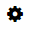
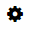

Configuring Externalized Parameters of an Integration Flow
Prerequisites
-
You have connected to the Web application.
-
Your user is assigned with the integration developer role.
-
You have accessed the customer workspace.
Context
SAP HCI Web application allows you to configure an integration flow individually or multiple integration flows at once. You can configure the runtime, error configuration and also provide a description about the integration flow.
If you want timer or SuccessFactors sender adapter scheduler to be available in quick configuration, you need to externalize these parameters while creating the integration content.
If you want SucessFactors sender adapter scheduler to be available in quick configure for existing integration flows, you should externalize the scheduler parameters and republish the integration package.
You must click on the participant’s name of sender and receiver elements, to view the header and property information. Also, you must drag and drop message flow over the participant's name, to assign communication channels.
You cannot use quick configure option for integration flows in Monitor and Discover tab pages. You can only configure integration flows in your customer workspace (Design tab page).
Procedure
-
In the Actions column for the integration flow you want
to configure, choose
 
  Configure
Configure  .
.